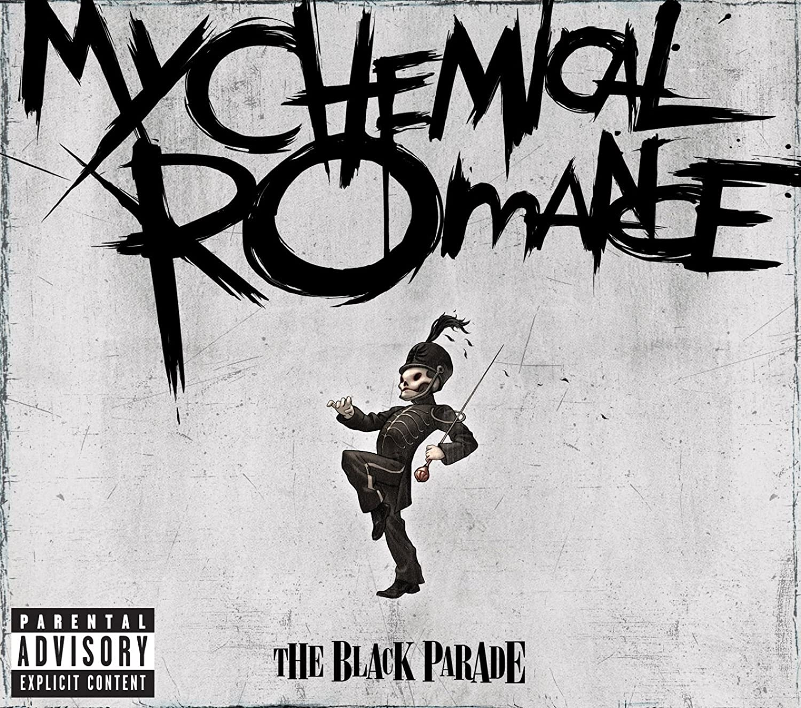

My Chemical Romance (también conocida por sus siglas MCR)
es una banda estadounidense de rock, formada en el año 2001 en el estado de Nueva Jersey.
En marzo de 2013, la banda anunció su separación.

Integrantes
Gerard Way
Mikey Way
Ray Toro
Frank Iero
Ex Integrantes
Matt Pelissier
Bob Bryar
James Dewees
Albunes principales
Año
Disco
2002
I brought you my bullets, you brought me your love
2004
Three cheers for sweet revenge
2006
The Black Parade
2013
Danger days: the true lives of the Fabulous Killjoys